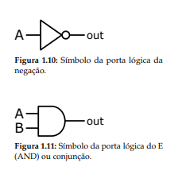
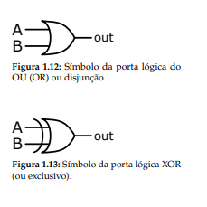
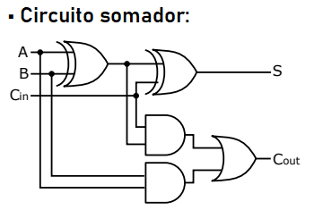
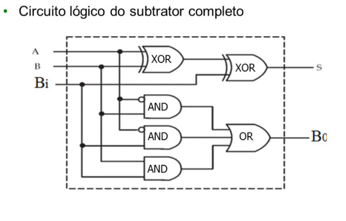
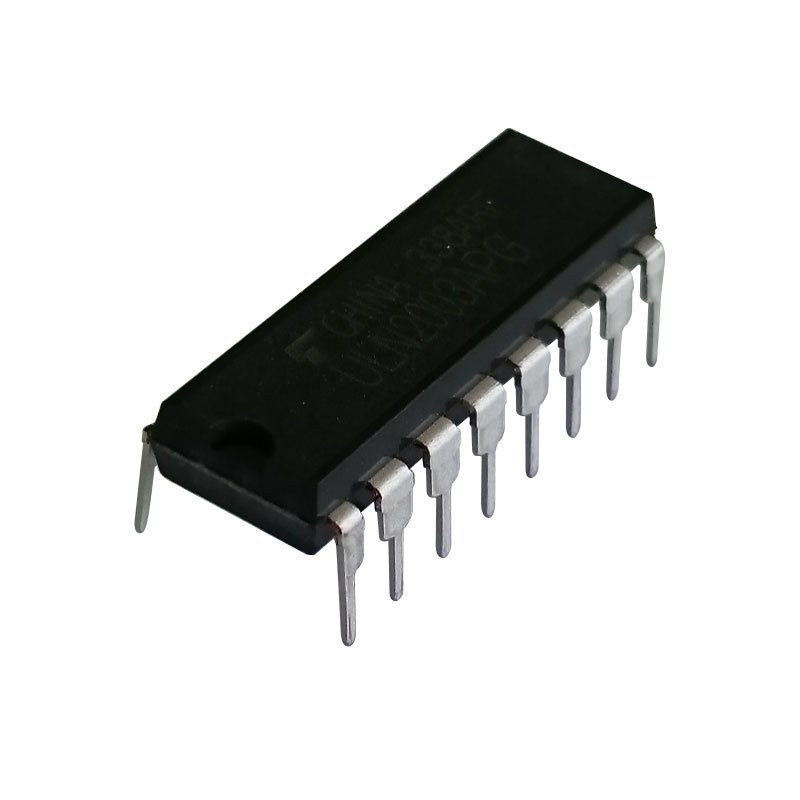

Portas Lógicas
Portas lógicas: Esse foi um dos assuntos mais interessantes e legais da apostila, pois ele também faz parte da cadeira de circuitos digitais e a gente trabalha com eles constantemente, por isso a gente sabe como eles funcionam e o quão importante ele é para os eletrônicos em gerais como os computadores, circuitos integrados, etc. As portas lógicas realizam os testes de decisão e operações aritméticas, e trabalham em conjunto com os números na forma de bit, assim como no sistema binário, portanto, a gente pode combinar essas portas logicas e fazer diversas coisas, como somadores, multiplicadores, comparadores, etc.
Uma das principais utilidades das portas lógicas, é o seu uso nos circuitos integrados, onde são agrupados de forma que resulte em algo, como por exemplo, temos o circuito aritméticos 74283, conhecido como circuito somador, onde sua função é fazer a soma de um número de 4 bits.
    